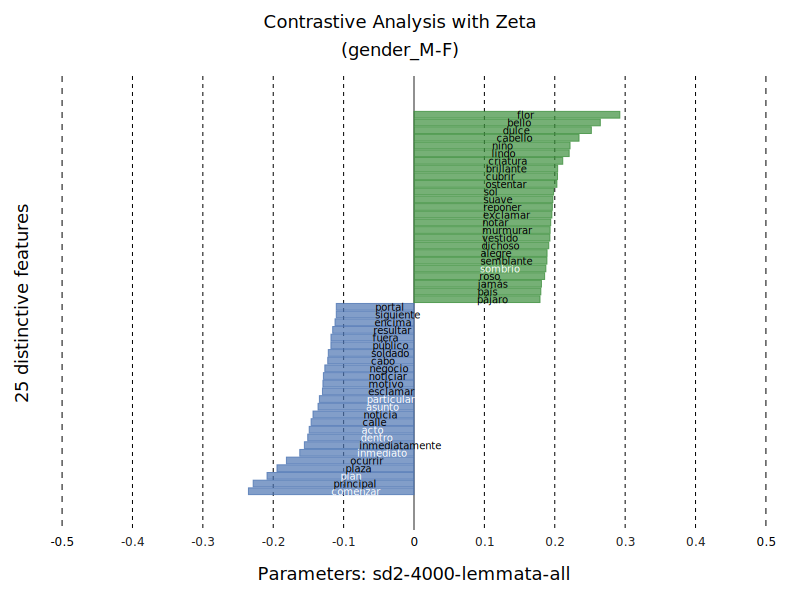

Interdisciplinary networking meeting for researchers and early career researchers
Helena Bermúdez Sabel
Mare Balticum Fellow 2023
Outline
- Presentation
- Project selection
- Discussion
Presentation
Training
-
Medieval Studies
- Master (2012)
- PhD (2019): thesis in Computational Philology
-
Digital Humanities:
- Specialised workshops and training
- Research stays in Maynooth (Ireland), Pittsburgh (USA), Prague (Czech Republic)
Scientific domains
- Historical Linguistics
- Latin and Romance languages (Ibero-Romance)
- Corpus Linguistics
- Digital Humanities
- Scholar Digital Editions
- Data modelling (TEI + Linked Open Data)
- Computational Literary Studies
Project selection
Digital workstation for the analysis of linguistic variation across witnesses

| Goals | Methods |
|---|---|
| Gain new knowledge about the Galician-Portuguese lyric manuscript tradition from the systematic analysis of linguistic variation phenomena between witnesses |
|

POSTDATA: A network of ontologies for European poetry
POSTDATA Project
| Goals | Methods |
|---|---|
| Creation of the means to publish analytical annotations related to any European Poetry tradition as Linked Open Data |
|
Anathomie by Gui de Chauliac
Anathomie by Gui de Chauliac
| Goals | Methods |
|---|---|
|
|
DIachronic Spanish sonnet COrpus and DISCOver

DIachronic Spanish sonnet COrpus and DISCOver
| Goals | Methods |
|---|---|
|
|
Édition hyperDIplomatique de la lyrique GAlégo-portugaise (DIGA)

DIGA Project
| Goals | Methods |
|---|---|
| Design of a digital edition model that enables the explotation of any paleographic or codicological phenomenon |
|
CAREXIL-FR: Letters by Spanish Republicans Refugees and Exiles in France
CAREXIL-FR Project
| Goal | Methods |
|---|---|
|
|
WoPoss: A World of Possibilities
Modal pathways over an extra-long period of time: the diachrony of modality in the Latin language
| Goal | Methods |
|---|---|
| Reconstruction of the evolution of modal meanings (possibility, necessity and volition) from the prehistory of the Latin language to the 7th century |
|
Towards a formalisation of the gender signal in writing (Ibero-Romance)
| Goal | Methods |
|---|---|
| Sociolinguistic study of the differences between women’s and men’s linguistic uses in writing |
|